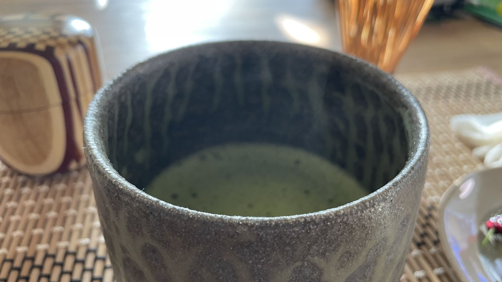
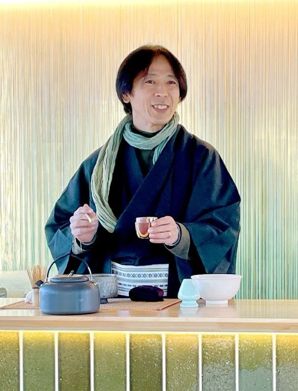
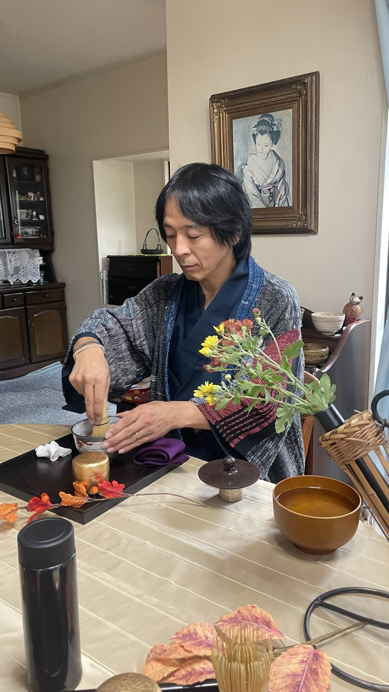

お点前体験を通して、静けさの中にある感覚を開く体験。

テーブル茶道は、テーブルと椅子を使ってお点前を楽しむ、現代の茶道のスタイルです。正座をせず、椅子に座ったままお茶を点てたり、いただいたりできます。畳の茶室でなくても、ふだんの空間でお点前を楽しめる形として広がっています。
倭迅会のテーブル茶道は、茶道に興味を持ったところから体験してみる場です。興味や体験を大切に、まずは一服を体感してみることから始めます。「いま、ここ」にある五感をひらくことが、その入口になります。
日々の中で、私たちは多くを見て、考え、判断し続けています。その速さに押されて、呼吸は浅くなり、本来そこにあるはずの音や香りに気づきにくくなっていきます。一服のお茶を点てる時間は、その感覚をそっと取り戻すための、小さな余白です。
静かな時間には、たくさんの感覚が息づいています。茶筅が器に触れる音。湯気に混じる抹茶の香り。器を持つ手の温度、口に広がる苦味と甘み。窓から入る光や、場に流れる空気。体験のあと、視界が少し明るく感じたり、香りや音に気づきやすくなることがあります。

刀を振るときも、茶を点てるときも、身体はひとつの線の上にあります。動きの極まるところには、必ず静けさがあり、静けさの奥には、かすかな動きが息づいています。
呼吸と身体を整えてきた稽古の感覚は、一服の中にもそのまま流れています。動と静は、同じ感覚のふたつの表れです。

正座ができなくても、作法がわからなくても、一服を受け取るところから始められる場を開いています。私の感じる茶道の本質——五感で場を楽しむ感覚——は、最初の一服からすでに始まっています。
正座不要・初心者歓迎です。テーブルと椅子で行うため、無理な姿勢は必要ありません。茶道未経験の方、正座が苦手な方、膝に不安がある方もお気軽にどうぞ。お子さまや、和文化が初めての方にも開かれています。
体験の目的は、一服を通じて呼吸を整え、感覚をリセットし、日常へ戻る準備をすることです。本来の自分が見ていた世界、感じていた世界を思い出す。その余白を、静けさの中に作ります。
テーブル茶道は、私の他の活動と組み合わせてこそ活きる場面が多くあります。ここでは、組み合わせの例をご紹介します。ご希望に合わせて、組み合わせをご相談いただけます。
リトリートやイベントの中で、テーブル茶道の体験を担当します。他の出展者の方との共催企画もご相談いただけます。
団体・企業向けの実施も承っています。内容により応相談となりますので、まずはご希望をお聞かせください。
※テーブル茶道単体での体験会の開催も可能です。ご希望の場合は、ご相談の際にお知らせください。
箱根遊船の遊覧船内での船上テーブル茶道ワークショップ（2026年、計7日間開催）
マルシェでのお点前体験など
福田ひろし（福和倭迅会）。テーブル茶道「雪月花」インストラクターの資格を持ち、体験会やお茶会を開くことができます。殺陣師として1999年より舞台に立ち、呼吸と身体を整えてきた稽古の感覚を、一服の時間にも活かしています。
組み合わせの内容は、ご希望の人数・場所・内容に合わせて、相談のうえ決めていきます。お問い合わせフォーム、または公式LINEからお気軽にご相談ください。
お問い合わせフォームGoogleフォームが開きます
公式LINEで相談する公式LINEが開きます